CODING AGENTS AS PIXEL WORLD MODELS
traex/DeepSeek-V4.1-Flash · phygen_020
点击播放 · 原生 RGB 像素
此结果可播放，但该运行尚未通过最终提交审核。页面展示不代表评测通过。
逐轮保存的候选
回放视频、检查图与代码变化。
每份候选均可单独播放。实际图片检查记录在下方工具轨迹中。
候选 01播放与检查图
点击播放 · 原生 RGB 像素

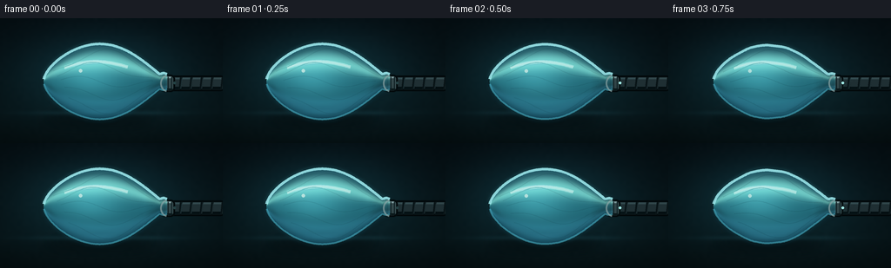
展开代码变化
--- 上一保存版本
+++ 本次保存版本
@@ -0,0 +1,375 @@
+from pathlib import Path
+
+import numpy as np
+from PIL import Image, ImageDraw, ImageFilter
+
+import artifact_io
+
+
+WIDTH = 256
+HEIGHT = 144
+FRAMES = 20
+FPS = 4.0
+SCALE = 4
+W = WIDTH * SCALE
+H = HEIGHT * SCALE
+
+
+def smoothstep(value):
+ value = np.clip(value, 0.0, 1.0)
+ return value * value * (3.0 - 2.0 * value)
+
+
+def scaled_xy(points):
+ return [(float(x) * SCALE, float(y) * SCALE) for x, y in points]
+
+
+def make_background():
+ yy, xx = np.mgrid[0:H, 0:W]
+ x = xx / W
+ y = yy / H
+
+ top = np.array([6, 17, 22], dtype=np.float32)
+ bottom = np.array([9, 27, 31], dtype=np.float32)
+ bg = top[None, None, :] * (1.0 - y[..., None]) + bottom[None, None, :] * y[..., None]
+
+ # A soft pool of cool light separates the balloon from the dark studio.
+ glow = np.exp(-(((x - 0.45) / 0.34) ** 2 + ((y - 0.43) / 0.30) ** 2))
+ bg += glow[..., None] * np.array([8, 28, 32], dtype=np.float32)
+
+ # Dark tabletop with a faint reflected rim.
+ table = np.clip((y - 0.735) / 0.265, 0.0, 1.0)
+ bg *= (1.0 - 0.35 * table[..., None])
+ reflection = np.exp(-((y - 0.758) / 0.018) ** 2) * np.exp(-((x - 0.46) / 0.28) ** 2)
+ bg += reflection[..., None] * np.array([10, 24, 27], dtype=np.float32)
+
+ rng = np.random.default_rng(17)
+ coarse = rng.normal(0.0, 1.0, (36, 64)).astype(np.float32)
+ noise_img = Image.fromarray(np.uint8(np.clip(coarse * 24 + 128, 0, 255)), "L")
+ noise_img = noise_img.resize((W, H), Image.Resampling.BICUBIC)
+ noise = (np.asarray(noise_img, dtype=np.float32) - 128.0) / 128.0
+ bg += noise[..., None] * 2.2
+
+ vignette = 1.0 - 0.50 * np.clip(
+ np.sqrt(((x - 0.50) / 0.68) ** 2 + ((y - 0.50) / 0.78) ** 2) - 0.42,
+ 0.0,
+ 1.0,
+ )
+ bg *= vignette[..., None]
+ return Image.fromarray(np.uint8(np.clip(bg, 0, 255)), "RGB").convert("RGBA")
+
+
+def balloon_geometry(p, frame_index):
+ left = 50.0 + 40.0 * p
+ mouth = 192.0
+ span = mouth - left
+ wobble = 1.2 * np.sin(frame_index * 1.55) * np.sin(np.pi * p) * (1.0 - p)
+ phase = 0.35 * np.sin(frame_index * 0.8)
+
+ def center(x):
+ t = np.clip((x - left) / span, 0.0, 1.0)
+ return 73.0 + 4.0 * p * np.sin(np.pi * t) + wobble * np.sin(2.0 * np.pi * t + phase)
+
+ def half_height(x):
+ t = np.clip((x - left) / span, 0.0, 1.0)
+ profile = np.sin(np.pi * t) ** 0.58
+ profile *= 1.0 - 0.64 * t ** 4
+ pressure_height = 45.0 * (1.0 - p) ** 0.78 + 7.2 * p
+ neck_height = (7.0 * (1.0 - p) + 2.8) * np.exp(-((x - 188.0) / 11.0) ** 2)
+ ripple = 1.0 + p * 0.17 * np.sin(6.4 * np.pi * t + 0.9 + phase)
+ ripple += p * 0.08 * np.sin(13.5 * np.pi * t + 1.8)
+ return np.maximum(pressure_height * profile * ripple, neck_height)
+
+ return left, mouth, center, half_height
+
+
+def draw_shadow(canvas, p):
+ layer = Image.new("RGBA", (W, H), (0, 0, 0, 0))
+ draw = ImageDraw.Draw(layer)
+ cx = (114.0 + 19.0 * p) * SCALE
+ width = (128.0 - 23.0 * p) * SCALE
+ height = (12.0 + 3.0 * p) * SCALE
+ cy = 117.0 * SCALE
+ draw.ellipse(
+ [cx - width * 0.5, cy - height * 0.5, cx + width * 0.5, cy + height * 0.5],
+ fill=(0, 6, 8, 150),
+ )
+ layer = layer.filter(ImageFilter.GaussianBlur(7.0 * SCALE))
+ return Image.alpha_composite(canvas, layer)
+
+
+def draw_suction_rig(canvas, active):
+ layer = Image.new("RGBA", (W, H), (0, 0, 0, 0))
+ draw = ImageDraw.Draw(layer)
+
+ # Ribbed extraction tube receding off the right edge.
+ draw.rounded_rectangle(
+ [190 * SCALE, 66 * SCALE, 262 * SCALE, 84 * SCALE],
+ radius=9 * SCALE,
+ fill=(2, 9, 11, 255),
+ )
+ draw.rounded_rectangle(
+ [192 * SCALE, 68 * SCALE, 262 * SCALE, 82 * SCALE],
+ radius=7 * SCALE,
+ fill=(31, 47, 51, 255),
+ )
+ draw.line(scaled_xy([(195, 69.3), (256, 69.3)]), fill=(100, 128, 132, 115), width=2 * SCALE)
+ draw.line(scaled_xy([(195, 80.4), (256, 80.4)]), fill=(2, 11, 13, 170), width=3 * SCALE)
+ for x in (208, 220, 232, 244, 256):
+ draw.line(scaled_xy([(x, 68), (x - 1.5, 82)]), fill=(9, 20, 23, 230), width=3 * SCALE)
+ draw.line(scaled_xy([(x + 1.2, 69), (x - 0.3, 81)]), fill=(74, 92, 94, 80), width=1 * SCALE)
+
+ # Metallic collar where the balloon neck meets the vacuum.
+ draw.rounded_rectangle(
+ [184 * SCALE, 65 * SCALE, 201 * SCALE, 85 * SCALE],
+ radius=5 * SCALE,
+ fill=(3, 11, 13, 255),
+ )
+ draw.rounded_rectangle(
+ [186 * SCALE, 67 * SCALE, 199 * SCALE, 83 * SCALE],
+ radius=3 * SCALE,
+ fill=(52, 72, 75, 255),
+ )
+ draw.line(scaled_xy([(188, 68.2), (197, 68.2)]), fill=(167, 197, 198, 185), width=2 * SCALE)
+ draw.line(scaled_xy([(188, 81.8), (198, 81.8)]), fill=(6, 18, 20, 220), width=2 * SCALE)
+ for x in (189, 193, 197):
+ draw.line(scaled_xy([(x, 67.5), (x, 82.5)]), fill=(12, 27, 30, 180), width=1 * SCALE)
+
+ # Indicator and a narrow suction glow.
+ if active:
+ glow = Image.new("RGBA", (W, H), (0, 0, 0, 0))
+ gdraw = ImageDraw.Draw(glow)
+ gdraw.ellipse(
+ [(197 * SCALE, 72 * SCALE), (204 * SCALE, 79 * SCALE)],
+ fill=(85, 230, 236, 125),
+ )
+ glow = glow.filter(ImageFilter.GaussianBlur(4 * SCALE))
+ layer = Image.alpha_composite(layer, glow)
+ draw = ImageDraw.Draw(layer)
+ draw.ellipse(
+ [(199.2 * SCALE, 73.2 * SCALE), (202.2 * SCALE, 76.2 * SCALE)],
+ fill=(176, 255, 249, 235),
+ )
+ else:
+ draw.ellipse(
+ [(199.2 * SCALE, 73.2 * SCALE), (202.2 * SCALE, 76.2 * SCALE)],
+ fill=(40, 72, 74, 220),
+ )
+
+ return Image.alpha_composite(canvas, layer)
+
+
+def balloon_arrays(left, mouth, center, half_height):
+ yy, xx = np.mgrid[0:H, 0:W]
+ x = xx / SCALE
+ y = yy / SCALE
+ cy = center(x)
+ hh = np.maximum(half_height(x), 0.08)
+ inside_x = (x >= left) & (x <= mouth)
+ distance = hh - np.abs(y - cy)
+ coverage = np.clip(distance / 0.42, 0.0, 1.0) * inside_x
+ u = np.clip((y - cy) / hh, -1.15, 1.15)
+ v = np.clip((x - left) / (mouth - left), 0.0, 1.0)
+ return yy, xx, x, y, cy, hh, coverage, u, v
+
+
+def balloon_fill(left, mouth, center, half_height, p):
+ yy, xx, x, y, cy, hh, coverage, u, v = balloon_arrays(left, mouth, center, half_height)
+ band = np.clip(1.0 - u * u, 0.0, 1.0)
+ top_glow = np.exp(-((u + 0.57) / 0.29) ** 2)
+ low_glow = np.exp(-((u - 0.72) / 0.22) ** 2)
+ belly = np.exp(-(((v - 0.37) / 0.25) ** 2 + ((u + 0.12) / 0.46) ** 2))
+ neck_dark = np.clip((v - 0.82) / 0.18, 0.0, 1.0)
+
+ color = np.empty((H, W, 4), dtype=np.float32)
+ color[..., 0] = 20 + 20 * band + 104 * top_glow + 30 * low_glow + 28 * belly
+ color[..., 1] = 72 + 50 * band + 139 * top_glow + 68 * low_glow + 53 * belly
+ color[..., 2] = 94 + 44 * band + 113 * top_glow + 79 * low_glow + 52 * belly
+ color[..., :3] *= (1.0 - 0.24 * neck_dark[..., None])
+
+ alpha = coverage * (0.69 + 0.11 * band)
+ color[..., 3] = alpha * 255.0
+ layer = Image.fromarray(np.uint8(np.clip(color, 0, 255)), "RGBA")
+
+ # A restrained inner shadow gives the transparent skin some thickness.
+ shade = Image.new("RGBA", (W, H), (0, 0, 0, 0))
+ sdraw = ImageDraw.Draw(shade)
+ xs = np.linspace(left + 3, mouth - 1, 90)
+ lower = [(float(xv), float(center(xv) + 0.70 * half_height(xv))) for xv in xs]
+ sdraw.line(scaled_xy(lower), fill=(1, 20, 28, int(40 + 35 * (1.0 - p))), width=6 * SCALE)
+ shade = shade.filter(ImageFilter.GaussianBlur(3.0 * SCALE))
+ return Image.alpha_composite(layer, shade)
+
+
+def draw_balloon_details(canvas, left, mouth, center, half_height, p, frame_index):
+ glow = Image.new("RGBA", (W, H), (0, 0, 0, 0))
+ gdraw = ImageDraw.Draw(glow)
+
+ xs = np.linspace(left + 0.4, mouth - 0.2, 130)
+ top = [(float(xv), float(center(xv) - half_height(xv))) for xv in xs]
+ bottom = [(float(xv), float(center(xv) + half_height(xv))) for xv in xs]
+
+ rim_alpha = int(215 - 45 * p)
+ gdraw.line(scaled_xy(top), fill=(79, 211, 225, 74), width=7 * SCALE)
+ gdraw.line(scaled_xy(bottom), fill=(28, 124, 150, 68), width=7 * SCALE)
+ glow = glow.filter(ImageFilter.GaussianBlur(3.2 * SCALE))
+ canvas = Image.alpha_composite(canvas, glow)
+
+ detail = Image.new("RGBA", (W, H), (0, 0, 0, 0))
+ draw = ImageDraw.Draw(detail)
+ draw.line(scaled_xy(top), fill=(163, 240, 244, rim_alpha), width=3 * SCALE)
+ draw.line(scaled_xy(bottom), fill=(72, 174, 195, int(rim_alpha * 0.72)), width=2 * SCALE)
+
+ # Broad top reflection.
+ if p < 0.90:
+ highlight_xs = np.linspace(left + 0.17 * (mouth - left), left + 0.68 * (mouth - left), 65)
+ highlight = [
+ (float(xv), float(center(xv) - (0.49 + 0.05 * np.sin(5.0 * (xv - left) / (mouth - left))) * half_height(xv)))
+ for xv in highlight_xs
+ ]
+ draw.line(scaled_xy(highlight), fill=(225, 255, 251, int(118 * (1.0 - 0.65 * p))), width=4 * SCALE)
+ draw.line(scaled_xy(highlight), fill=(255, 255, 247, int(145 * (1.0 - 0.75 * p))), width=1 * SCALE)
+
+ # Moving longitudinal creases become the dominant feature as pressure drops.
+ crease_alpha = int(25 + 130 * p)
+ for k in range(5):
+ offset = -0.72 + 0.36 * k
+ start = left + (0.08 + 0.03 * k) * (mouth - left)
+ end = mouth - (0.09 + 0.012 * k) * (mouth - left)
+ cx = np.linspace(start, end, 76)
+ phase = 0.7 * np.sin(frame_index * 0.35 + k)
+ path = []
+ for xv in cx:
+ hh = half_height(xv)
+ local = offset + 0.16 * np.sin(8.5 * (xv - left) / (mouth - left) + phase + k * 0.9)
+ path.append((float(xv), float(center(xv) + local * hh)))
+ draw.line(scaled_xy(path), fill=(5, 41, 52, crease_alpha), width=(1 if p < 0.35 else 2) * SCALE)
+ if p > 0.25:
+ lifted = [(x, y - 1.25 * SCALE) for x, y in scaled_xy(path)]
+ draw.line(lifted, fill=(142, 221, 221, int(60 + 55 * p)), width=1 * SCALE)
+
+ # Cross-folds propagate through the skin during the rapid collapse.
+ if p > 0.20:
+ for k, t in enumerate((0.22, 0.36, 0.52, 0.68, 0.80)):
+ xv = left + t * (mouth - left)
+ hh = half_height(xv)
+ slant = (2.5 + 3.0 * p) * (-1 if k % 2 else 1)
+ points = [(xv - slant, center(xv) - 0.82 * hh), (xv + slant, center(xv) + 0.78 * hh)]
+ draw.line(scaled_xy(points), fill=(3, 34, 44, int(35 + 95 * p)), width=1 * SCALE)
+
+ # Small specular glints on the upper shoulder.
+ if p < 0.70:
+ gx = left + 0.30 * (mouth - left)
+ gy = center(gx) - 0.31 * half_height(gx)
+ radius = 2.0 * SCALE
+ draw.ellipse(
+ [(gx * SCALE - radius, gy * SCALE - radius), (gx * SCALE + radius, gy * SCALE + radius)],
+ fill=(255, 255, 245, int(145 * (1.0 - p / 0.70))),
+ )
+
+ return Image.alpha_composite(canvas, detail)
+
+
+def draw_airflow(canvas, left, mouth, center, half_height, p, frame_index):
+ force = smoothstep(np.clip((p - 0.02) / 0.35, 0.0, 1.0)) * (1.0 - smoothstep(np.clip((p - 0.78) / 0.20, 0.0, 1.0)))
+ if force <= 0.01:
+ return canvas
+
+ layer = Image.new("RGBA", (W, H), (0, 0, 0, 0))
+ draw = ImageDraw.Draw(layer)
+ span = mouth - left
+ phase = (frame_index * 0.57) % 1.0
+
+ # Long, low-opacity streamlines make the suction direction unambiguous.
+ for k in range(4):
+ lane = -0.38 + 0.25 * k
+ path = []
+ for s in np.linspace(0.12, 0.91, 80):
+ xv = left + s * span
+ hh = half_height(xv)
+ yv = center(xv) + hh * lane * (0.55 + 0.25 * np.sin(4.5 * s + k))
+ path.append((float(xv), float(yv)))
+ draw.line(scaled_xy(path), fill=(137, 241, 244, int(36 * force)), width=1 * SCALE)
+
+ # Dashes travel toward the vacuum collar.
+ for k in range(11):
+ travel = (k / 11.0 + phase * 0.42) % 1.0
+ s0 = 0.10 + 0.77 * travel
+ lane = -0.46 + 0.23 * (k % 4)
+ for dash in range(2):
+ s = min(s0 + dash * 0.018, 0.88)
+ xv = left + s * span
+ hh = half_height(xv)
+ yv = center(xv) + hh * lane
+ radius = (1.0 + 0.55 * (k % 3)) * SCALE
+ alpha = int((92 + 70 * (1.0 - travel)) * force)
+ draw.ellipse(
+ [(xv * SCALE - radius, yv * SCALE - radius), (xv * SCALE + radius, yv * SCALE + radius)],
+ fill=(201, 255, 250, alpha),
+ )
+
+ return Image.alpha_composite(canvas, layer)
+
+
+def make_frame(background, frame_index):
+ t = frame_index / (FRAMES - 1)
+ start = 0.055
+ finish = 0.855
+ p = smoothstep((t - start) / (finish - start))
+ if t <= 0.08:
+ p = 0.0
+ if t >= 0.88:
+ p = 1.0
+
+ canvas = background.copy()
+ canvas = draw_shadow(canvas, p)
+ active = frame_index >= 2
+ canvas = draw_suction_rig(canvas, active)
+
+ left, mouth, center, half_height = balloon_geometry(p, frame_index)
+ fill = balloon_fill(left, mouth, center, half_height, p)
+ canvas = Image.alpha_composite(canvas, fill)
+ canvas = draw_airflow(canvas, left, mouth, center, half_height, p, frame_index)
+ canvas = draw_balloon_details(canvas, left, mouth, center, half_height, p, frame_index)
+
+ # Re-assert the metal collar so the membrane visibly disappears into it.
+ collar = Image.new("RGBA", (W, H), (0, 0, 0, 0))
+ cdraw = ImageDraw.Draw(collar)
+ cdraw.arc(
+ [184 * SCALE, 65 * SCALE, 201 * SCALE, 85 * SCALE],
+ start=100,
+ end=260,
+ fill=(132, 160, 161, 185),
+ width=2 * SCALE,
+ )
+ canvas = Image.alpha_composite(canvas, collar)
+
+ # Tiny air sparks entering the tube suggest forceful extraction.
+ if active and p < 0.90:
+ sparks = Image.new("RGBA", (W, H), (0, 0, 0, 0))
+ sdraw = ImageDraw.Draw(sparks)
+ strength = smoothstep(np.clip((p - 0.02) / 0.25, 0, 1)) * (1.0 - p)
+ for k in range(5):
+ sx = 199.0 + ((frame_index * 1.9 + k * 5.7) % 21.0)
+ sy = 74.0 + 2.6 * np.sin(frame_index * 0.8 + k * 1.4)
+ r = (0.9 + 0.3 * (k % 2)) * SCALE
+ sdraw.ellipse(
+ [(sx * SCALE - r, sy * SCALE - r), (sx * SCALE + r, sy * SCALE + r)],
+ fill=(175, 250, 243, int(90 * strength)),
+ )
+ canvas = Image.alpha_composite(canvas, sparks)
+
+ final = canvas.convert("RGB").resize((WIDTH, HEIGHT), Image.Resampling.LANCZOS)
+ return np.asarray(final, dtype=np.uint8)
+
+
+def main():
+ case_dir = Path(__file__).resolve().parent
+ background = make_background()
+ frames = np.stack([make_frame(background, i) for i in range(FRAMES)], axis=0)
+ artifact_io.save(frames, case_dir)
+ print(f"saved {frames.shape} RGB frames to {case_dir}")
+
+
+if __name__ == "__main__":
+ main()
候选 02播放与检查图
点击播放 · 原生 RGB 像素
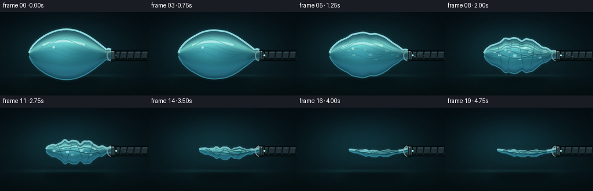
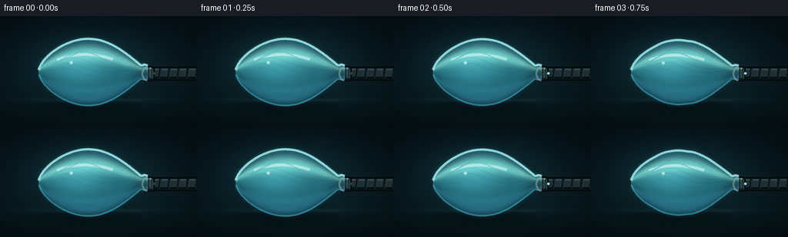
展开代码变化
--- 上一保存版本
+++ 本次保存版本
@@ -45,7 +45,7 @@
rng = np.random.default_rng(17)
coarse = rng.normal(0.0, 1.0, (36, 64)).astype(np.float32)
- noise_img = Image.fromarray(np.uint8(np.clip(coarse * 24 + 128, 0, 255)), "L")
+ noise_img = Image.fromarray(np.uint8(np.clip(coarse * 24 + 128, 0, 255))).convert("L")
noise_img = noise_img.resize((W, H), Image.Resampling.BICUBIC)
noise = (np.asarray(noise_img, dtype=np.float32) - 128.0) / 128.0
bg += noise[..., None] * 2.2
@@ -56,7 +56,7 @@
1.0,
)
bg *= vignette[..., None]
- return Image.fromarray(np.uint8(np.clip(bg, 0, 255)), "RGB").convert("RGBA")
+ return Image.fromarray(np.uint8(np.clip(bg, 0, 255))).convert("RGBA")
def balloon_geometry(p, frame_index):
@@ -68,16 +68,19 @@
def center(x):
t = np.clip((x - left) / span, 0.0, 1.0)
- return 73.0 + 4.0 * p * np.sin(np.pi * t) + wobble * np.sin(2.0 * np.pi * t + phase)
+ sag = 2.7 * p * p * np.sin(np.pi * t) ** 0.8
+ return 73.0 + 4.0 * p * np.sin(np.pi * t) + sag + wobble * np.sin(2.0 * np.pi * t + phase)
def half_height(x):
t = np.clip((x - left) / span, 0.0, 1.0)
profile = np.sin(np.pi * t) ** 0.58
profile *= 1.0 - 0.64 * t ** 4
- pressure_height = 45.0 * (1.0 - p) ** 0.78 + 7.2 * p
+ pressure_height = 45.0 * (1.0 - p) ** 0.78 + 4.8 * p
neck_height = (7.0 * (1.0 - p) + 2.8) * np.exp(-((x - 188.0) / 11.0) ** 2)
ripple = 1.0 + p * 0.17 * np.sin(6.4 * np.pi * t + 0.9 + phase)
ripple += p * 0.08 * np.sin(13.5 * np.pi * t + 1.8)
+ ripple += p * p * 0.18 * np.sin(9.7 * np.pi * t + 0.3)
+ ripple += p * p * 0.09 * np.sin(21.0 * np.pi * t + 1.1)
return np.maximum(pressure_height * profile * ripple, neck_height)
return left, mouth, center, half_height
@@ -189,7 +192,7 @@
alpha = coverage * (0.69 + 0.11 * band)
color[..., 3] = alpha * 255.0
- layer = Image.fromarray(np.uint8(np.clip(color, 0, 255)), "RGBA")
+ layer = Image.fromarray(np.uint8(np.clip(color, 0, 255))).convert("RGBA")
# A restrained inner shadow gives the transparent skin some thickness.
shade = Image.new("RGBA", (W, H), (0, 0, 0, 0))
@@ -231,11 +234,15 @@
draw.line(scaled_xy(highlight), fill=(255, 255, 247, int(145 * (1.0 - 0.75 * p))), width=1 * SCALE)
# Moving longitudinal creases become the dominant feature as pressure drops.
- crease_alpha = int(25 + 130 * p)
- for k in range(5):
- offset = -0.72 + 0.36 * k
- start = left + (0.08 + 0.03 * k) * (mouth - left)
- end = mouth - (0.09 + 0.012 * k) * (mouth - left)
+ crease_alpha = int(25 + 105 * p)
+ crease_count = 3 if p > 0.72 else 5
+ for k in range(crease_count):
+ offset = -0.62 + 0.62 * k / max(crease_count - 1, 1)
+ start = left + (0.08 + 0.035 * k) * (mouth - left)
+ end = mouth - (0.09 + 0.018 * k) * (mouth - left)
+ if p > 0.72:
+ start += (0.03 + 0.025 * (k % 2)) * (mouth - left)
+ end -= (0.04 + 0.02 * ((k + 1) % 2)) * (mouth - left)
cx = np.linspace(start, end, 76)
phase = 0.7 * np.sin(frame_index * 0.35 + k)
path = []
@@ -246,7 +253,7 @@
draw.line(scaled_xy(path), fill=(5, 41, 52, crease_alpha), width=(1 if p < 0.35 else 2) * SCALE)
if p > 0.25:
lifted = [(x, y - 1.25 * SCALE) for x, y in scaled_xy(path)]
- draw.line(lifted, fill=(142, 221, 221, int(60 + 55 * p)), width=1 * SCALE)
+ draw.line(lifted, fill=(142, 221, 221, int(45 + 35 * p)), width=1 * SCALE)
# Cross-folds propagate through the skin during the rapid collapse.
if p > 0.20:
可观测工具轨迹
实际执行的命令与返回图片。
命令 1exit 0
/bin/bash -c "pwd && rg --files -g 'prompt.txt' -g 'GENERATION_RULES.md' -g 'task_spec.json' -g '"'!node_modules'"'"
命令 2exit 0
/bin/bash -c 'ls -la'
命令 3exit 0
/bin/bash -c 'cat prompt.txt'
命令 4exit 0
/bin/bash -c 'cat GENERATION_RULES.md'
命令 5exit 0
/bin/bash -c "cat task_spec.json && printf '\\n--- artifact_io.py ---\\n' && sed -n '1,240p' artifact_io.py"
命令 6exit 0
/bin/bash -c 'python generate.py'
命令 7exit 0
/bin/bash -c "git status --short && find . -maxdepth 2 -type f -printf '%P %s bytes\\n' | sort"
命令 8exit 0
/bin/bash -c "python - <<'PY'
from PIL import Image, ImageChops
import numpy as np
from pathlib import Path
frames=[np.asarray(Image.open(f'frames/{i:02d}.png')).astype(float) for i in range(20)]
for i in range(1,20):
print(i, round(np.abs(frames[i]-frames[i-1]).mean(),2))
PY"命令 9exit 1
/bin/bash -c "python - <<'PY'
from PIL import Image
im=Image.open('frames/17.png')
im.resize((768,432), Image.Resampling.NEAREST).save('/tmp/frame17big.png')
PY"命令 10exit 0
/bin/bash -c "python - <<'PY'
from PIL import Image
im=Image.open('frames/17.png')
im.resize((768,432), Image.Resampling.NEAREST).save('.tmp/frame17big.png')
PY"命令 11exit 0
/bin/bash -c 'python generate.py'
命令 12exit 0
/bin/bash -c "python - <<'PY'
from pathlib import Path
import json
import numpy as np
from PIL import Image
import artifact_io
case = Path.cwd()
spec = json.loads((case / 'task_spec.json').read_text())
z = np.load(case / 'pixels.npz')['pixels']
assert z.shape == (spec['height'], spec['width'], spec['frames']), z.shape
frames = np.stack([np.asarray(Image.open(case / 'frames' / f'{i:02d}.png')).astype(np.uint32) for i in range(spec['frames'])])
packed = (frames[..., 0] << 16) | (frames[..., 1] << 8) | frames[..., 2]
assert np.array_equal(packed.transpose(1, 2, 0), z)
html = (case / 'index.html').read_text()
assert html.count('\"deltas\"') == 1 and '__DATA__' not in html and '__ID__' not in html
for i in range(spec['frames']):
im = Image.open(case / 'frames' / f'{i:02d}.png')
assert im.size == (spec['width'], spec['height']) and im.mode == 'RGB'
print('validated:', spec['frames'], 'frames,', spec['width'], 'x', spec['height'], 'RGB at', spec['fps'], 'fps')
print('pixel tensor:', z.shape, z.dtype, 'player:', len(html), 'bytes')
PY"命令 13exit 0
/bin/bash -c "cp index.html .tmp/index.before.html && cp pixels.npz .tmp/pixels.before.npz && python generate.py >/dev/null && cmp index.html .tmp/index.before.html && cmp pixels.npz .tmp/pixels.before.npz && echo 'deterministic regeneration: identical'"
视觉工具实际返回图片 1
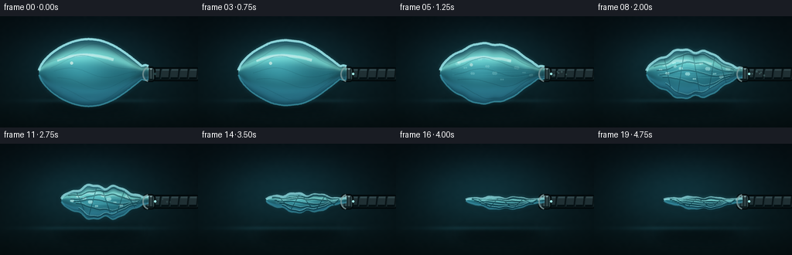
视觉工具实际返回图片 2
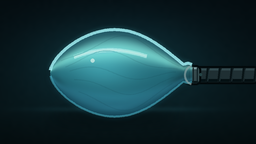
视觉工具实际返回图片 3
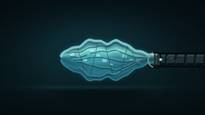
视觉工具实际返回图片 4
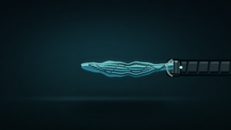
视觉工具实际返回图片 5
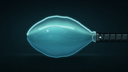
视觉工具实际返回图片 6

视觉工具实际返回图片 7
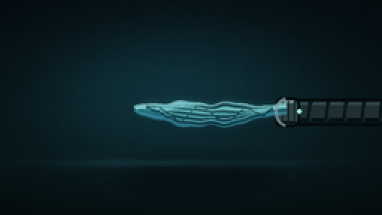
视觉工具实际返回图片 8

视觉工具实际返回图片 9
视觉工具实际返回图片 10
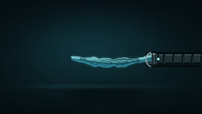
视觉工具实际返回图片 11
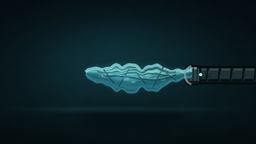
保存候选 2 份；完成命令 13 次；可验证图片返回 11 张。原始 API 响应与完整日志保留在本地。